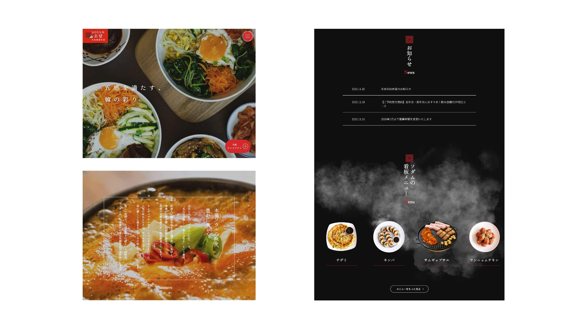
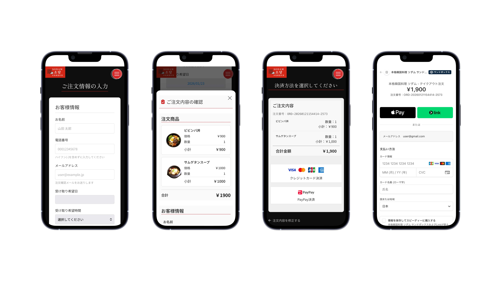
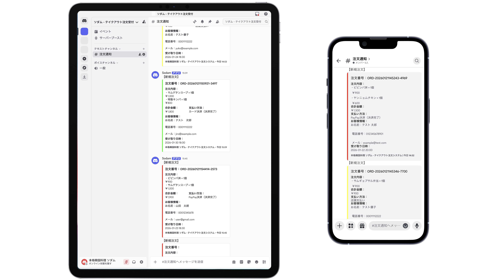

架空の韓国料理店をモデルに、テイクアウト注文と決済、来店予約をWeb上で完結させるWebサービスです。
ターゲットは20〜30代女性とファミリー層。直感的な操作と、日常的に利用したくなるような利便性とデザインの両立を目指しました。
制作期間
ワイヤーフレーム・デザイン：約1週間
コーディング：約3週間
制作人数
3名
使用技術
Figma / HTML / CSS / JavaScript / PHP / MySQL / Stripe
担当内容
ワイヤーフレーム作成、UIデザイン、フロントエンド実装、
決済フローのロジック構築、Discordを用いた店舗通知システムの実装
詳細説明

トップページ
サイト訪問時に瞬時に食欲を刺激するビジュアル選定に注力しました。
また、主要アクションである「テイクアウト注文・予約」を促すフローティングボタンを設置し、離脱率の低下を図っています。

テイクアウト注文・決済フロー
注文情報の入力から注文完了までを担当。
ユーザーの操作ミスによる誤注文を防ぐため、確認モーダルを挟む設計にしました。また、Stripe APIを導入し、クレジットカード決済も実現しています。
※現在はテストモードのため、ダミーカード情報による決済シュミレーションが可能です。

自動通知システム（Discord）
注文完了と同時に店舗側Discordへ即時通知が飛ぶ仕組みを構築。
店舗側の注文の見落としを防ぎ、オペレーションの効率化へ繋げられるようにしました。